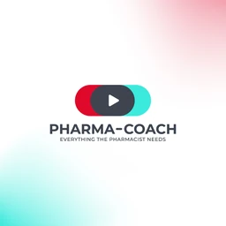
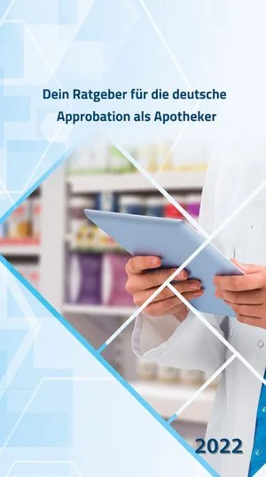

Warum Pharma-Coach?
Why Pharma-Coach?
Als Apotheker in Deutschland erlebt man täglich eine Diskrepanz: Die Ausbildung ist solide, aber der Übergang in die Beratungspraxis am HV-Tisch ist selten strukturiert vorbereitet. Dieses Defizit betrifft besonders internationale Kolleg:innen, die den Weg zur Approbation gehen und dann im Offizinalltag stehen, ohne praxisorientiertes Feedback erhalten zu haben.
Pharma-Coach ist der Versuch, dieses Problem mit modernen Mitteln anzugehen, strukturiert, praxisnah und zugänglich. Nicht als Ersatz für die Ausbildung, sondern als das, was danach fehlt.
Working as a pharmacist in Germany, one encounters a daily gap: the training is solid, but the transition into actual patient counselling at the dispensing counter is rarely prepared in a structured way. This affects pharmacists across the board, particularly international colleagues who obtain their approbation and then face daily practice without structured, practice-based feedback.
Pharma-Coach addresses this problem with modern tools, structured, practical and accessible. Not as a replacement for formal training, but as what consistently comes after it and is missing.
Werdegang
Career Timeline
Abschluss des Pharmaziestudiums als Grundlage der beruflichen Laufbahn.
Completed his pharmacy degree, laying the foundation of his professional career.
Sieben Jahre im pharmazeutischen Marketing bei verschiedenen Arzneimittelherstellern. Parallel MBA-Studium sowie internationale Trainingsprogramme in Organisation, Marketing und Unternehmenskommunikation, darunter Schulungen bei den Talal Abu-Ghazaleh Academies und dem NYIT Training Center.
Seven years in pharmaceutical marketing with several manufacturers. In parallel, an MBA and international training programmes in organisation, marketing and corporate communication, including courses at the Talal Abu-Ghazaleh Academies and the NYIT Training Center.
Ankunft in Deutschland und Beginn des Anerkennungsverfahrens, seitdem vollständig in der Offizin tätig.
Arrival in Germany and start of the recognition process, working exclusively in community pharmacy ever since.
Gründungs- und Vorstandsmitglied der Vereinigung syrischer Ärzte und Apotheker in Deutschland (SyGAAD). Organisation zahlreicher Bildungsveranstaltungen für Kolleg:innen mit Migrationshintergrund, darunter ein Workshop mit über 180 Teilnehmenden. Moderation mehrerer Webinare und Gast in verschiedenen pharmazeutischen Fachpodcasts.
Founding board member of SyGAAD, the association of Syrian doctors and pharmacists in Germany. Organised numerous professional events for pharmacists with a migration background, including a workshop attended by over 180 participants. Hosted professional webinars and appeared as a guest on specialist pharmacy podcasts.
Leitung der Filiale der Engel-Apotheke in Harsewinkel, und Aufbau von Pharma-Coach: der digitalen Lernplattform für Beratungskompetenz in der Apotheke.
Managing the Engel-Apotheke branch in Harsewinkel, and building Pharma-Coach: the digital learning platform for counselling excellence in pharmacy.
YouTube-Kanal
YouTube channel

Buch
Book
